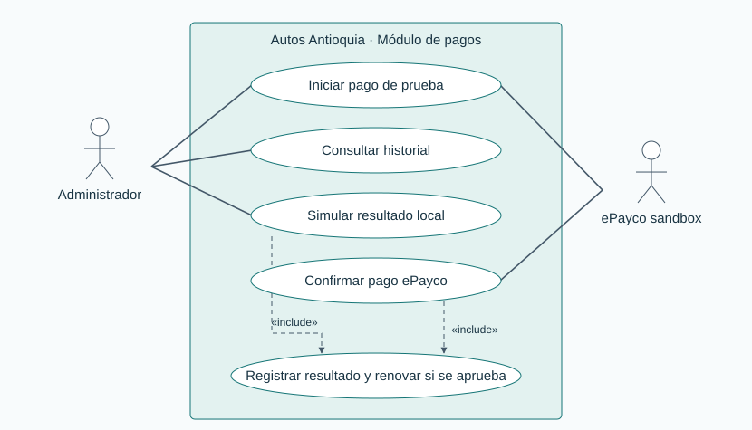
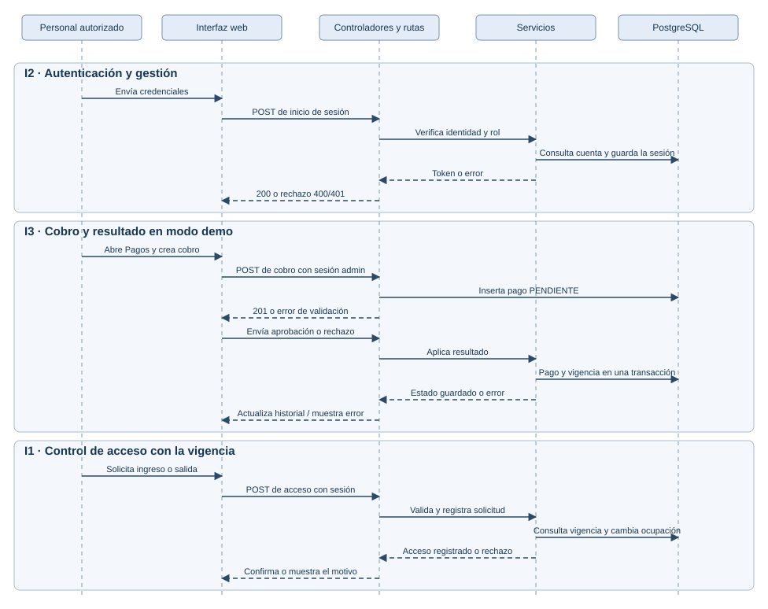
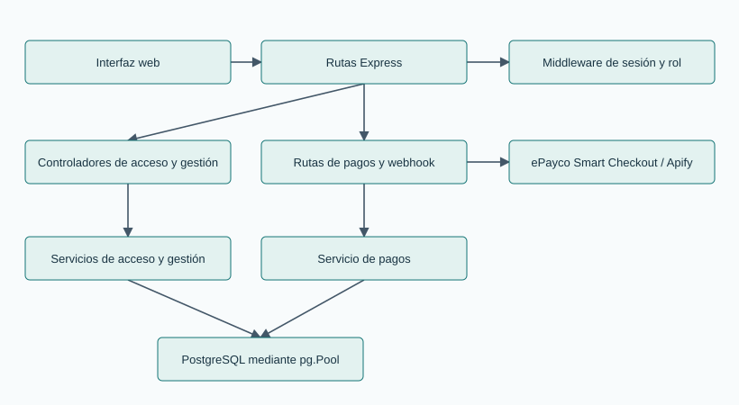

PROYECTO ACADÉMICO · ITERACIÓN 3
Informe de entregables del sistema de información para parqueadero
22 de noviembre de 2026
Node.js · TypeScript · Express · PostgreSQL
Autos Antioquia apoya la operación de un parqueadero por mensualidad. La Iteración 1 desarrolló el registro de entradas y salidas, el control de la vigencia y la asignación de celdas. La Iteración 2 incorporó cuentas, roles y gestión de clientes y celdas. Esta iteración agrega el registro y seguimiento de pagos de mensualidad.
El administrador inicia un cobro desde la ficha del cliente. El sistema registra la referencia, el monto, la moneda y el estado del pago. Una aprobación activa la mensualidad y suma 30 días desde el vencimiento vigente o desde la fecha actual si ya venció.
| Actividad | Ubicación |
|---|---|
| 1. Requerimientos funcionales y no funcionales | Sección 2 |
| 2. Casos de uso para StarUML | Sección 3 y CasosUsoGestionPagos.mdj |
| 3. Historias de usuario | Sección 3 |
| 4. Mockups | Sección 4 y MockupPagos.html |
| 5. Secuencias de las tres iteraciones | Sección 5 y SecuenciasIteraciones1a3.mdj |
| 6. Componentes de las tres iteraciones | Sección 6 y ComponentesIteraciones1a3.mdj |
| 7. Plan de pruebas resumido | Sección 7 y Plan de pruebas.md |
| 8. Repositorio GitHub | Sección 8 |
| ID | Requerimiento y criterio de aceptación |
|---|---|
| RF-P01 | El administrador inicia un pago para un cliente existente. El servidor determina el importe en COP y crea una referencia única en estado PENDIENTE. |
| RF-P02 | El modo demo permite registrar una aprobación o un rechazo para un pago simulado pendiente. |
| RF-P03 · Extensión | El conector ePayco abre Smart Checkout en pruebas. El servidor valida la firma de la confirmación y consulta la referencia con el proveedor antes de aplicar el resultado. La prueba con el proveedor queda pendiente. |
| RF-P04 | Un pago aprobado activa la mensualidad y suma 30 días desde la mayor fecha entre hoy y el vencimiento almacenado. Un pago pendiente o rechazado conserva el vencimiento. |
| RF-P05 | El administrador consulta los últimos 30 pagos del cliente y puede distinguir importe, estado y origen. La API conserva las referencias y las fechas de creación y aplicación. |
| ID | Requerimiento y criterio de verificación |
|---|---|
| RNF-P01 | Control de acceso. Las rutas de gestión exigen una sesión con rol Administrador. Se esperan HTTP 401 sin sesión y 403 para el rol Operador. |
| RNF-P02 | Consistencia. El resultado y la renovación se guardan en una transacción PostgreSQL. Un reenvío simultáneo de la misma referencia conserva una sola renovación. |
| RNF-P03 | Configuración y privacidad. Las credenciales se mantienen en variables del servidor. El formulario del proveedor recoge los datos del pago y la base local registra los datos del cobro. |
| RNF-P04 | Usabilidad. El diálogo se abre desde Clientes y presenta los estados y el modo de pruebas con texto visible. Los mensajes de resultado se anuncian mediante una región de estado. |
| RNF-P05 | Continuidad. La instalación agrega la tabla de pagos mediante una migración versionada. La gestión de pagos reutiliza las cuentas, clientes y regla de renovación existentes. |
| ID | Historia y aceptación |
|---|---|
| HU-P01 | Como administrador quiero crear un pago para un cliente, para registrar su cobro de mensualidad. Debe aparecer como pendiente en el historial con la tarifa configurada. RF-P01 · T01 |
| HU-P02 | Como administrador quiero simular la aprobación o el rechazo, para demostrar el efecto del pago. La aprobación renueva una vez y el rechazo conserva la vigencia. RF-P02, RF-P04 · T02–T04 |
| HU-P03 · Extensión | Como administrador quiero iniciar un checkout de ePayco en pruebas, para comprobar que el sistema aplica su confirmación. Debe validarse el cobro y una firma inválida debe rechazarse. RF-P03, RF-P04 · T06–T07 pendientes |
| HU-P04 | Como administrador quiero consultar los pagos de un cliente, para identificar el resultado registrado. La vista muestra monto, estado y origen a un administrador autenticado. RF-P05, RNF-P01 · T01–T05 |

El administrador inicia pagos, revisa su historial y simula resultados en modo local. ePayco participa en la apertura de la sesión y la confirmación en sandbox. Ambos caminos registran el resultado mediante la misma regla de renovación.
El prototipo navegable se abre desde MockupPagos.html. Permite recorrer la apertura del diálogo, la creación del pago y sus resultados con datos ficticios.
Cliente de prueba · Mensualidad Vencida
Pagos$50.000 COP · Simulación local
Crear pago de pruebaPENDIENTE Simular aprobación Simular rechazo
$50.000 COP · APROBADO · demo
$50.000 COP · RECHAZADO · demo
Como extensión, se prevé abrir el formulario alojado en ePayco y consultar el resultado en el historial de Autos Antioquia.
La vista Clientes muestra el nuevo vencimiento tras una aprobación. Los pagos rechazados y pendientes permanecen visibles para distinguirlos de los aprobados.
El archivo SecuenciasIteraciones1a3.mdj reúne los diagramas editables en StarUML. Incluye entrada y salida (I1), inicio y cierre de sesión, matrícula, cuentas, mensualidades y celdas (I2), y gestión de pagos (I3).

Los diagramas muestran las respuestas a través de las rutas y controladores y separan los caminos de éxito y error. La aprobación en demo registra y renueva en una transacción. El rechazo conserva el vencimiento.
La interfaz web se comunica con Express. El middleware controla sesión y rol para las acciones de portería, administración y pagos. Los controladores y servicios persisten los datos en PostgreSQL.

| Iteración | Responsabilidades |
|---|---|
| I1 · Portería | Vehículos, accesos, vigencia de mensualidad y celdas. |
| I2 · Administración | Autenticación, roles, gestión de clientes, cuentas y celdas. |
| I3 · Pagos | Diálogo e historial, rutas de cobro y webhook, validación y actualización transaccional, tabla pago_mensualidad y conexión con ePayco. |
La integración utiliza la API de sesiones de Smart Checkout y la confirmación servidor a servidor. Documentación de ePayco · Guía de confirmación.
Entorno. Playwright, Microsoft Edge, Express y PostgreSQL 18.6 en un esquema temporal. La ejecución del 22 de noviembre de 2026 usó un cliente ficticio vencido, dos cuentas de prueba y una tarifa de $50.000 COP.
| Caso | Acción y resultado esperado | Ejecución |
|---|---|---|
| T01 | Crear un pago. Debe registrarse pendiente por $50.000 y conservar el vencimiento. | Aprobado · demo |
| T02 | Simular rechazo. El historial debe mostrar RECHAZADO y la fecha debe conservarse. | Aprobado · demo |
| T03 | Aprobar otro cobro. Debe figurar APROBADO y extender el vencimiento 30 días. | Aprobado · demo |
| T04 | Enviar dos aprobaciones simultáneas para la misma referencia. El vencimiento debe conservar la primera renovación. | Aprobado · demo |
| T05 | Consultar sin sesión y confirmar como operador. El servidor debe responder 401 y 403, respectivamente. | Aprobado · demo |
| T06 | Completar el checkout de prueba y verificar el webhook y la renovación. | Pendiente · sandbox |
| T07 | Enviar una firma inválida. Se espera HTTP 400 y que se conserven el pago y la fecha. | Pendiente · sandbox |
El plan de pruebas enlaza capturas, resultados y el comando de reproducción de T01 a T05. T06 y T07 corresponden a la extensión ePayco.
Repositorio. El código fuente y los entregables se consolidan en la rama principal de pablograjales-glitch/AutosAntioquia.
Video demostrativo. El recorrido de las tres iteraciones muestra portería, administración y pagos en una sola ejecución.
Conclusiones. La Iteración 3 incorpora un historial de pagos y conecta la aprobación con la vigencia que consulta portería. Las cinco pruebas en modo demo confirmaron el cambio de vencimiento, el rechazo, los permisos y el procesamiento único de aprobaciones repetidas. La comunicación con ePayco queda pendiente como extensión.